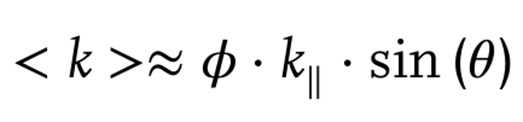
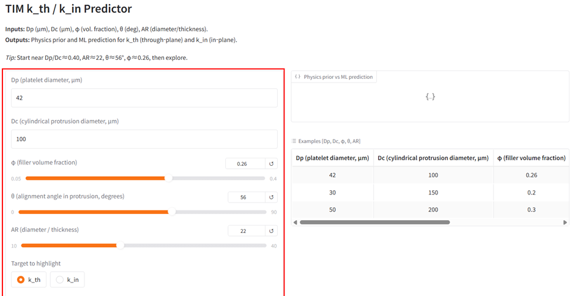
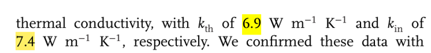
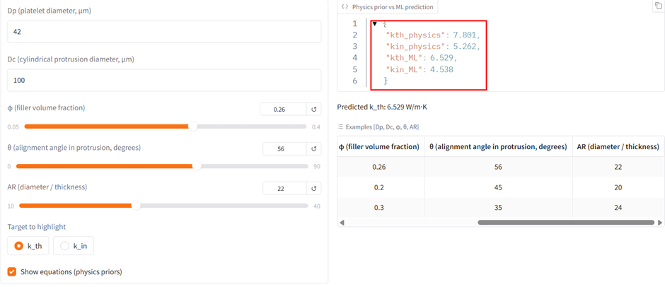
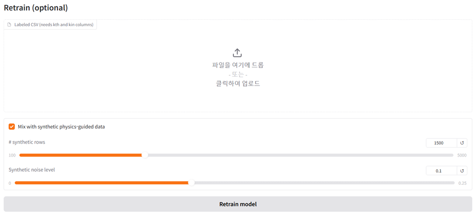
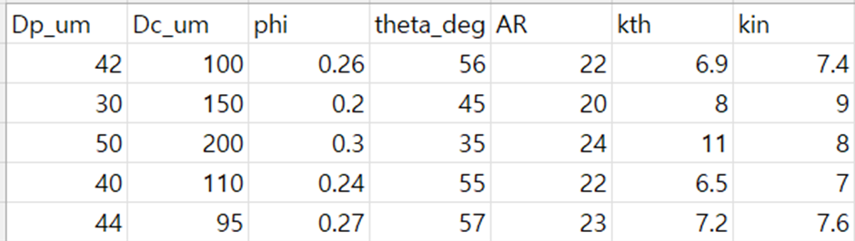
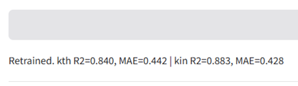
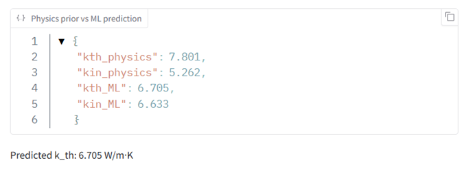
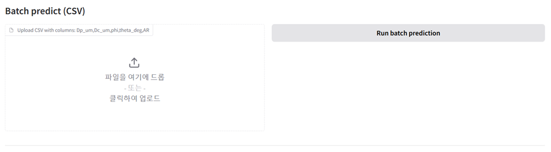

화공인공지능: AI의 핵심 원리인 머신러닝 구현 - 특정 조건에서 TIM의 kth , kin 을 예측할 수 있는 사이트 만들기
Bi-Directional Assembly of Boron Nitride μ-Platelets by Micro-Molding for Advanced Thermal Interface Materials 논문을 토대로, AI의 핵심 원리인 머신러닝을 구현해보기로 했다.
목표- 논문에 제시된 물리방정식과 머신 러닝을 결합해, 특정 조건에서 TIM의 kth , kin 을 예측할 수 있도록 구현하기
도구 - Hugging Face Spaces (머신러닝 라이브러리를 제공하는 플랫폼)

논문은 FSI/FEA 시뮬레이션과 실험을 통해, 유효 열전도 <k>가 충전율 , 평면방향 고유전도 , 정렬각의 곱에 비례한다는 식을 제시한다. 이때 근사에 가까운 식을 보정하기 위해 GeomBoost(Dp/Dc,AR)항을 추가로 넣어주었다. 이를 통해
kth= ϕ×k∥×sinθ × GeomBoost(Dp/Dc,AR)
kin= ϕ×k∥×cosθ × GeomBoost(Dp/Dc,AR)
위와 같은 식을 제작할 수 있었다. 이후 논문이 다룬 입자/패턴 기하와 정렬, 충전율에 대응하도록 입력 변수를 Dp_um, Dc_um, phi, theta_deg, AR(=지름/두께)의 5개로 정하였다. 이후 5개의 입력 변수와 그에 따른 kth, kin 값이 포함된 학습 데이터 셋을 주면 이를 스스로 학습하여 GeomBoost(Dp/Dc,AR)항이 스스로 오차를 줄이도록 조정하는 코드를 작성하였다.
이를 허깅페이스에 입력하여 UI와 함께 구현할 수 있었다. 다음 링크를 통해 앱을 사용할 수 있다.
https://huggingface.co/spaces/audio123142/chemicML12345
다음은 앱의 사용에 관한 간단한 설명이다.

먼저 왼쪽에 5개의 입력변수를 넣을 수 있는 창이 있다. 이쪽에 Dp_um, Dc_um, phi, theta_deg, AR 변수를 각각 설정해 넣을 수 있으며 그 결과는 오른쪽에 뜨게 된다.

앞서 언급한 논문에서 다음과 같은 조건일 때, kth=6.9, kin=7.4임이 조사되었다.
| Dp (platelet diameter, μm) | Dc (cylindrical protrusion diameter, μm) | ϕ (filler volume fraction) | θ (alignment angle in protrusion, degrees) | AR (diameter / thickness) |
| 42 | 100 | 0.26 | 56 | 22 |
이를 입력하면 결과는 다음과 같다.

kth=6.529, kin=4.538로 실제 값에 비해 적게 나온 것을 볼 수 있다. 이는 아직 학습이 되지 않았기 때문이다.

아래쪽 Retrain 부분을 통해 모델을 학습시킬 수 있다. 이때 학습용 csv가 필요하다.

이런식으로 5개의 입력 변수와 그에 따른 결과값이 입력된 데이터파일을 업로드하면, 이를 보고 모델 식을 수정하는 학습을 자동으로 하게 된다. 아래쪽의 체크박스는 학습을 위한 합성데이터를 생성할건지의 여부이다. 합성 데이터는 실제 데이터를 모방하여 컴퓨터 알고리즘이나 인공지능으로 생성한 가상의 데이터로, AI학습에 널리 사용된다. 1500개의 데이터를 0.1의 노이즈(가상의 데이터에 현실감을 부여)로 생성하여 학습량을 늘릴 수 있다.

데이터 파일을 올리고 학습을 누르면 성공했다는 메시지가 뜬다.

이후 똑 같은 조건에서 재 예측 결과 kth가 6.705로 6.9에 가까워짐을 알 수 있다. 이를 통해 데이터 셋을 제공하면 학습하여 모델을 수정하는 머신러닝을 구현하였다.

마지막으로 한번에 하나의 예측만 가능한 단점을 해소하기 위해 batch 예측 칸을 만들어, 여러 개의 데이터 셋이 담긴 파일을 업로드하면 각 조건에 따른 k값을 다 예측해주는 기능도 추가하였다.